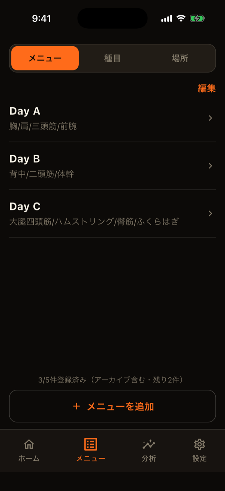
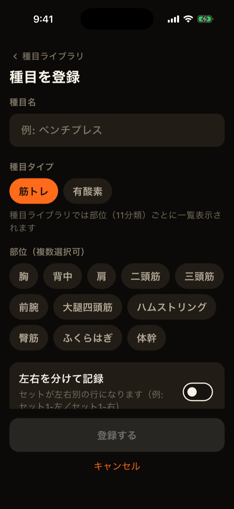
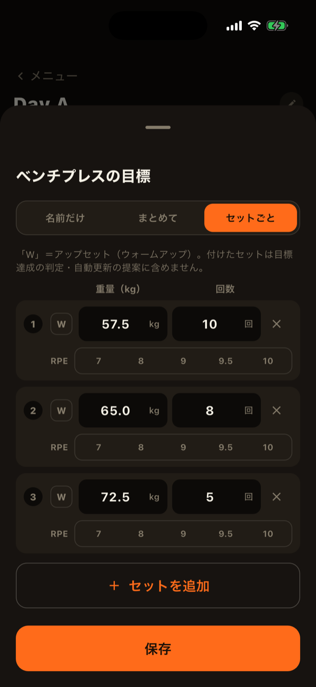

LiFTYの「メニュー」タブには、メニュー・種目・場所の3つの管理画面があります。この3つをどう組み合わせるかが、記録の分け方を決めます。
3つの関係
- 種目：ベンチプレスなど、記録する対象そのものです。場所やマシンを紐付けて登録できます。
- メニュー：Day A・Day Bのように、その日やる種目と目標をまとめたものです。
- 場所：自宅やジムAなど、トレーニングする場所です。
メニュー自体は場所に紐付きません。ワークアウトを開始する時に場所を選ぶと、そのメニューが使う種目の場所をもとに、候補のメニューが絞り込まれます。

種目を登録する
「メニュー」タブの「種目」から登録します。名前を入力すると、一般的な種目の候補が表示されます。候補をタップすると、種目名と部位が自動で入力されます。
- 種目タイプ：「筋トレ」か「有酸素」を選びます。有酸素は、時間・距離・消費カロリー・平均心拍数を記録できます。項目名と単位を自分で追加することもできます。
- 部位：胸・背中・肩・二頭筋・三頭筋・前腕・大腿四頭筋・ハムストリング・臀筋・ふくらはぎ・体幹の11分類から選びます。胸・背中・肩・二頭筋・三頭筋・体幹は、広背筋や長頭などの細分類も複数選べます。
- 左右を分けて記録：オンにすると、この種目のセットは左右別の行になります。
- 単位と重量の増分：kgかlbsを種目ごとに選べます。ステッパーで増減する幅も選べます。
- 場所・マシン/機材：どちらも任意です。マシンごとのシートの高さや角度などは、「マシン設定」として項目名と内容のペアで何件でも残せます。
- メモ：同じ名前の種目を見分けるためのメモなどに使えます。

ジム・マシンごとに記録を分ける
同じ種目でも、場所やマシンが違えば重量の感覚は変わります。LiFTYでは、そのような種目を場所ごとに別の種目として登録します。たとえば「レッグプレス（ジムA）」と「レッグプレス（ジムB）」を別々に登録すれば、前回の記録・自己ベスト・グラフが、それぞれ独立して残ります。
登録済みの種目を元に作りたい時は、種目の詳細画面（進捗画面）右上のコピーアイコンを使うと、内容を引き継いだまま場所だけ変えて登録できます。
場所を登録する
「メニュー」タブの「場所」から追加します。無料プランでは2件まで登録できます。3件以上は有料プランです。使っている種目がある場所は、先にその種目の場所指定を外すか、種目をアーカイブしないと、アーカイブできません。
メニューを作る
「メニュー」タブの「メニュー」から追加し、種目を選んで目標を設定します。目標は、種目ごとに3つの粒度から選べます。
- 名前だけ：目標を決めず、種目だけ並べます。
- まとめて設定：セット数・回数・重量の目安を、全セット共通で決めます。
- セットごと：1セットずつ重量・回数を変えます。ピラミッドや漸増セットに向いています。行ごとに「W」（ウォームアップ）を付けたり、左右を指定したりできます。
強度の種目には、目標RPEも任意で設定できます。目標の設定画面では、メニュー全体の部位別セット数も確認できます（ウォームアップは数えません）。種目の並び順は、ドラッグで変えられます。
無料プランでは、メニューは5件まで作成できます（アーカイブ済みも数えます）。ただし、記録が一度もないメニューは完全に削除でき、その分は数えません。

アーカイブと削除
メニュー・種目・場所の「×」は、一覧の「編集」をオンにすると表示されます。押すとアーカイブされ、過去の記録・グラフはそのまま残ります。アーカイブしたものは、設定の「データ管理」の「アーカイブ」から、復元や完全削除ができます。完全削除は、その項目を使った記録が一度もない場合だけ可能です。
LiFTYは、アカウント作成なしですぐに記録を始められる筋トレ記録アプリです。
App Storeでダウンロード